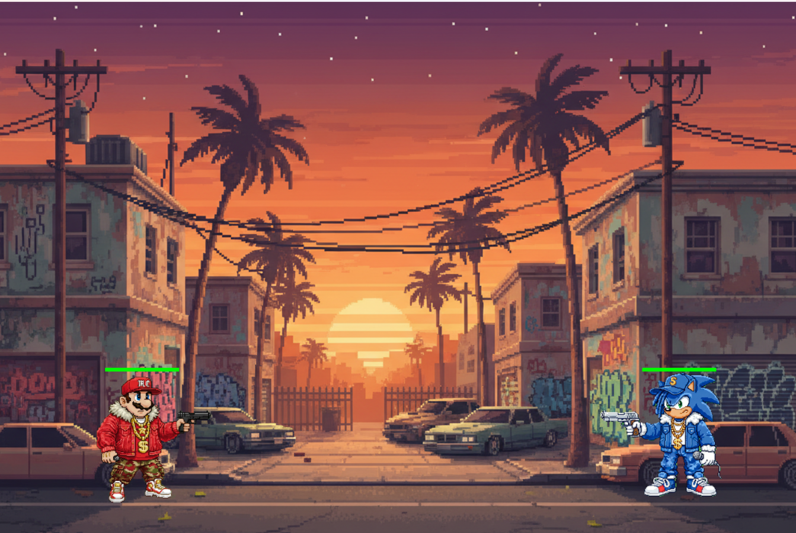

Projet de jeu vidéo
Développement d'un jeu vidéo en Python utilisant la bibliothèque Pygame. C'est un jeu en 1 contre 1 où les joueurs incarnent soit Mario, soit Sonic.

Elyakim ONOCIA — BTS SIO — Option SLAM
Je m'appelle Elyakim Onocia, j'ai 18 ans. Je suis étudiant en première année de BTS SIO, en option SLAM (Solutions Logicielles et Applications Métiers). J'ai choisi cette option car j'aime développer et créer des choses de mes propres mains.
Voici quelques-uns de mes points forts :
Je suis passionné par l'informatique, car c'est un domaine en constante évolution qui pousse à toujours apprendre. J'aime découvrir de nouveaux langages de programmation et de nouvelles technologies. En dehors de l'informatique, j'aime aussi le sport, que je pratique tous les jours. Je vis actuellement à Dumbéa.
Voici mon parcours académique et professionnel :
2019-2022 : Brevet des collèges
2022 : Stage de découverte professionnelle à la FNAC
2023-2025 : Bac Sciences et Technologies du Management et de la Gestion, spécialité Système d'Information de Gestion
2026-2027 : BTS SIO, option SLAM
Apprendre les principes de la cybersécurité et protéger les systèmes.
Analyse de vulnérabilités.
Configurer et administrer un réseau.
Routage, VLAN.
Créer des applications et des logiciels.
Front-end, back-end, bases de données.
Planifier et gérer des projets informatiques.
Méthodes agiles, suivi de planning.
Python, HTML, CSS, SQL
Configuration et administration de réseaux
Principes de la cybersécurité et protection des systèmes informatiques
Développement d'un jeu vidéo en Python utilisant la bibliothèque Pygame. C'est un jeu en 1 contre 1 où les joueurs incarnent soit Mario, soit Sonic.
